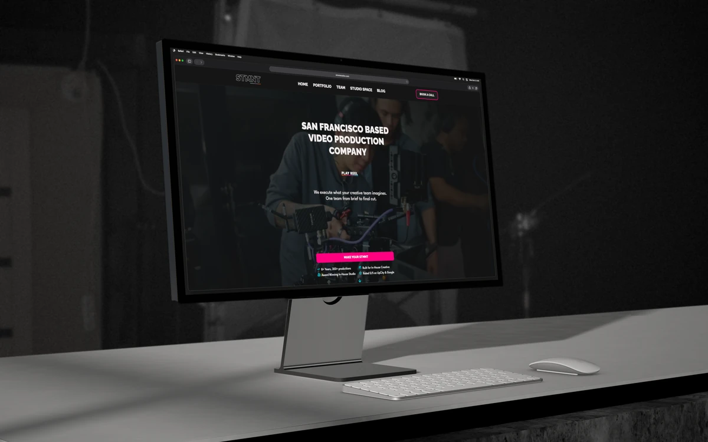
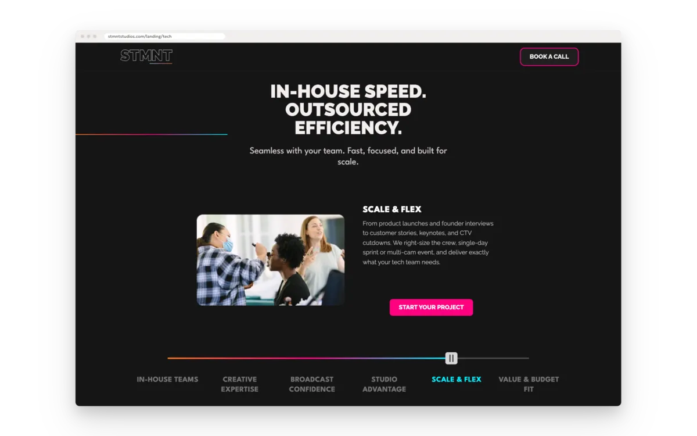
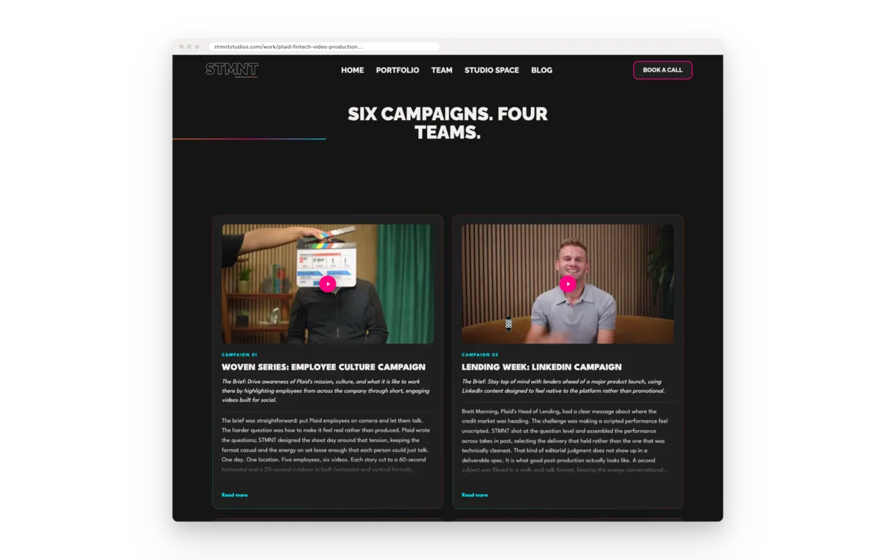

STMNT Studios (live site, opens in a new tab)
FigmaPenWebflowClaude CodeGoogle AdsGoogle AnalyticsSearch ConsoleWebsite redesign and Webflow build for a San Francisco video production company.
- Role
- Web design, Webflow build, Google Ads, technical SEO
- System
- 50 design variables · a 57-field case-study template · 42 blog posts
- Result
- The Jun–Sep 2026 search campaign brought two booked sales calls. The client reports a signed five-figure deal from them.
I redesigned the site in Figma and built it in Webflow: information architecture, page structure, a component library, a CMS for case studies and the blog, and landing pages for paid search.
The logo and colours were the client’s. My job was to turn them into a system that holds up across every page, on desktop and mobile. I also built the Tech & Fintech landing page, run the Google Ads campaign that points to it, and look after the site’s technical SEO.






Primitives
neon-rose#FE0080brain-freeze#00EFFFsun-orange#F77522rock-star-pink#CB89B6winter-wizard#9EE8F8matt-black#151515matt-black-secondary#1F1F1Fserious-gray#CEC8C8off-white#F3EEEEwhite#FFFFFFblack#000000
Semantic roles and the primitives
bg-primaryusesmatt-blackbg-secondaryusesmatt-black-secondarytxt-primaryusesoff-whitetxt-secondaryusesserious-graytxt-bodyuseswhitetxt-accentusesbrain-freezetxt-linkusesbrain-freeze
button-prim-bgusesneon-rosebutton-prim-txtuseswhitebutton-sec-bgusesmatt-black-secondarybutton-sec-txtusesbrain-freeze
border-brandusesneon-roseborder-accentusesbrain-freezeborder-muteduseswinter-wizardicon-accentusesbrain-freeze
Spacing · rem
3xs.1252xs.5xs.75sm1md1.5lg3xl4section6
Radius · px
sm8md12lg16xl32pill56
Outline: border-default, 2 px, in border-accent.
Type · rem
xs.75sm1md1.25lg1.5xl2.25xxl3
font-headinguses Ralewayfont-bodyuses League Spartan